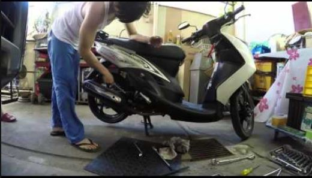

How to Change Your Scooter Tires
Many people might assume that changing scooter tires is difficult. However, this is not true. Changing a tire on a scooter can be quiet simple if you have the proper and right tools with the basic knowledge of how to use those tools.
Step 1 - Wheel Nuts
Locate the wheel nuts and remove them. You can then twist the wheel off the scooter’s body. However, always remember the way from where the tire came off, because you would require putting it in the same way you removed.
Step 2 - Valve StemLocate the valve stem and press it. Make sure that you press it inwards in order to remove all the air from the tube. Once this is done, make sure to remove the wheel nut from the valve stem.
Step 3 - Separation of BeadYou then need to separate the bead of the tire by just pushing it away from the rim of the tube. When this step is performed, all that you are required is to insert the tire iron right near the valve stem.
Step 3 - Separation of BeadYou then need to separate the bead of the tire by just pushing it away from the rim of the tube. When this step is performed, all that you are required is to insert the tire iron right near the valve stem.
Step 4 - Breaking offBreak the beads and hold the first tire iron, inserting the second one as close to the first. Open up a piece of tire and move the second tire iron far away from the first one.
Step 5 - OpeningOnce you have opened up the tire as much as you can, take hold of the second tire iron and insert it right under the rim on the other side. Make sure that you utilize both the tire irons to lift the tire completely off the rim.
Step 6 - Placing the TirePut the tire back on the rim. Thus, place the tire over the rim’s edge and open one side of the tire on with the first tire iron, utilizing the second tire iron to hold the tire in its right place. Also, do not forget to insert the tube, and also make sure to put the valve stem through the rim’s hole.
Step 7 - Push the RimJust push the rim towards the center of the tire. But also be careful, not to catch the tube right between the two. And always, utilize the tire iron to open up the tire over the side of the rim. Do not forget to reinstall everything that you had removed to get the tire off. If you need to fix a flat tire, perform all the steps mentioned above. Some scooters require the tire to be removed from the rim, while others do not. Also, make sure while riding on your new tire. It can definitely be more polished than usual because of the thin coating which is done for molding. Thus, you should be easy on the tire for a while so that it is able to get some heat onto it.
TIRE PRESSURE• Tire type with tube (Ex. Size front tire 70/90-14 M/C 34P)
• Tire pressure (cold tire) 200 KPA (2.00 KGF/CM2 28 PSI)
• Rear tire. Tire type with tube (Ex. 80/90 – 14 M/C 40P)
• Tire pressure (cold tire) 225 KPA (2.25 KGF/CM2 32